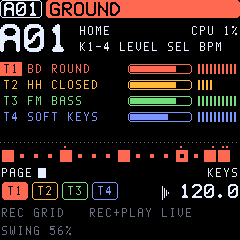

TONIC
TONIC is a Digitone-style FM groovebox for the M-VAVE FM-1: four synth tracks sharing twelve voices, a four-operator FM engine with eight algorithms, a virtual-analog engine and a DRUM engine (a kit of 8 synthesized drums on one track, 31 models with their own controls) as options per sound, an insert effect and a modulation envelope on every voice, a scale per sound with chords by its degrees, a euclidean rhythm generator (accents, ghost notes, named rhythms, melodies), chords on every note (voicings, strum, with or without the arpeggiator), a master compressor, sidechain ducking and tempo-synced volume shaping, momentary performance effects (loop rolls, tape stop, filter sweeps, freeze), a 64-step sequencer with parameter locks, sound locks, trig conditions, micro timing, retrig and a length and speed per track, an arpeggiator, chorus, delay, reverb and a DJ filter. The 16 white keys are its trig keys.

Version 0.12. Not yet tested on a physical FM-1 (it runs in the instruction-level emulator fm1-emu). Installing is at your own risk; the installer can put M-VAVE's own firmware back.
- Try it in the browser: the same code the FM-1 runs, with sound and Web MIDI. No FM-1 needed.
- Install: from Chrome or Edge, with the FM-1 connected by USB.
- Manual: sound design, sequencing, performing, saving.
- Download tonic-0.12.fwsc: for the command-line installer,
python3 base/tools/fm1_install.py tonic-0.12.fwsc. - Source code on GitHub.
- 0.12 saves its projects in a new format: older versions cannot read what 0.12 saved. Take a USB backup first if you may want to go back.
- Earlier versions stay available: 0.11 (twelve voices, before the drum controls, the insert, the modulation envelope and the scales), 0.10.1 (eight voices, the performance audit), 0.10 (the PUMP page, before the performance audit), 0.9.2 (the functional audit's fixes, before PUMP), 0.9.1 (the UI audit's fixes), 0.9 (before the UI audit's fixes), 0.8 (21 drum models, fewer LFO destinations), 0.7 (chords only in the arpeggiator, the first EUCLID), 0.6.1 (before the momentary effects), 0.6 (a kit's pad picked only through NOTE or by playing it), 0.5.2 (before euclid, arp chords, the compressor and FOLD / RING), 0.5.1 (the same sound, before the optimizations), 0.5 (the first DRUM engine, its ENGINE knob on K1), 0.4.1 (before the DRUM engine; it cannot read projects saved by 0.5), 0.4 (the colour screen, the old piano roll), 0.3.2 (the screen before 0.4's colours), 0.3.1 (the preset list, loading as you turn), 0.3 (22 VA sounds, no preset list), 0.2 (the first VA engine, 10 VA sounds) and 0.1 (FM only).
Built on fm1-base and felucca-bsp (MPL-2.0). TONIC is an independent work inspired by the Elektron Digitone; it is not affiliated with or endorsed by Elektron or M-VAVE. Digitone is a trademark of Elektron; M-VAVE and FM-1 are trademarks of their owners.